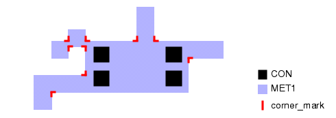
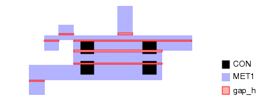
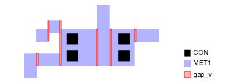
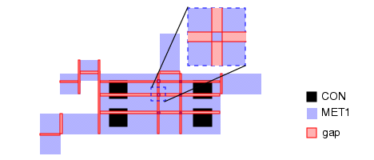
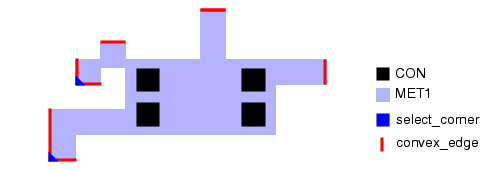
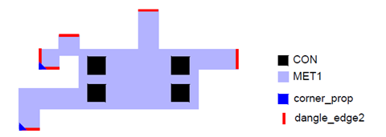
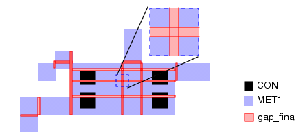
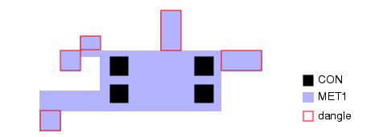
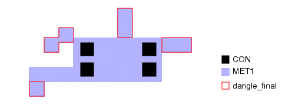

Checking Dangling Wires
A dangling wire is defined as a segment of metal that connects to one or more vias at one end and is unconnected at the other end.
Figure 1 shows dangling wires for an example MET1 polygon. You can check for dangling wires in your design by first breaking a metal layer into segments (separated by small gaps), then determining which portions of the metal layer are dangling based on interaction between the segments and the metal.
Try It!  |
Calibre Advanced DRC (eqDRC) Tutorial and Example Kit Go to this page on Support Center to download the complete eKit. This example is in the miscellaneous_checks/dangling_wire example directory. |
Procedure
- Create a variable for the
widths of the derived gaps and the minimum metal width.
VARIABLE dist 0.002 // gap width VARIABLE min_w 0.05 // minimum wire width - Derive single edges of length
dist on each of the inside corners.
corner_mark = EXT [MET1] < dist ABUT == 90
- Use the corner edges to derive
small horizontal gaps that separate the MET1 shape into rectangles.
concave_pair_h = DFM SPACE corner_mark MET1 < 3 BY INT HORIZONTAL MEASURE ALL gap_h = DFM COPY concave_pair_h REGION
- Repeat the previous step for
the vertical direction.
concave_pair_v = DFM SPACE corner_mark MET1 < 3 BY INT VERTICAL MEASURE ALL gap_v = DFM COPY concave_pair_v REGION
- Combine the horizontal and
vertical gaps and filter out the intersection to prevent them from
merging.
gap = gap_v XOR gap_h
- Derive the outside edges (edges
with two convex end points). Put corner markers where two outside
edges meet.
convex_edge = CONVEX EDGE MET1 == 2 select_corner = INT convex_edge < dist ABUT == 90 REGION
- In cases where two convex_edges
meet, select the shorter edge to represent the dangling tip. It
is possible for a convex_edge to touch 0, 1, or 2 corner markers.
// for two convex edges that meet, determine the shorter edge and // attach the length as a property to the corner marker shape corner_prop = DFM PROPERTY select_corner convex_edge OVERLAP ABUT ALSO MULTI [short = MIN(LENGTH(convex_edge))]// filter for shorter edges dangle_edge2 = DFM PROPERTY convex_edge corner_prop OVERLAP ABUT ALSO MULTI // output all convex edges that do not form a corner // with another convex edge [ "+test0" = (COUNT(corner_prop) == 0) ? 1 : 0 ] // for edges that touch one corner_prop shape, output the // shorter edge [ "+test1" = (COUNT(corner_prop) != 1) ? 0 : (LENGTH(convex_edge) == PROPERTY(corner_prop,short, 1)) ? 1 : 0] // for edges that touch two corner_prop shapes, output the // shorter edge [ "+test2" = (COUNT(corner_prop) != 2) ? 0 : (LENGTH(convex_edge) == PROPERTY(corner_prop,short, 1)) ? 1 : (LENGTH(convex_edge) == PROPERTY(corner_prop,short, 2)) ? 1 : 0 ] // output edges that meet any of the conditions [ - = PROPERTY_REF("+test0") + PROPERTY_REF("+test1") + PROPERTY_REF("+test2") ] > 0
- Expand the dangling tip edges
into polygons. Filter the gaps that touch a dangling tip.
dangle_tip = EXPAND EDGE dangle_edge2 INSIDE BY dist gap_notip = gap NOT INTERACT dangle_tip - Derive the intersection pieces,
then combine them with the gap polygons to create continuous shapes.
gap_ext = EXPAND EDGE (LENGTH gap_notip == dist) OUTSIDE BY dist gap_final = DFM COPY gap_notip gap_ext
- Derive the MET1 sections that
are separated by each gap.
MET1_pieces = MET1 NOT gap_final - Find each dangling polygon
by identifying the metal sections that interact with the dangling
tips.
dangle = MET1_pieces INTERACT dangle_tip
- Filter out dangling polygons
that contain contacts.
Then, size up the result by the gap width dist. This prevents the not_dangle layer that is derived in the next step from having slivers of width dist.
dangle2 = dangle NOT INTERACT v1 dangle_all = SIZE dangle2 BY dist INSIDE OF m2 - Derive non-dangling polygons,
and filter out special cases where a dangling wire connects to a
non-dangling section in more than one place.
not_dangle = MET1 NOT dangle_all dangle_wire2 = (INTERACT dangle_all not_dangle == 1) OR (NOT INTERACT dangle_all not_dangle) - In certain cases, removing
a dangling section creates sections of metal that are too narrow.
In these cases, use the min_w constraint to include these sections
in the output.
not_dangle2 = MET1 NOT dangle_wire2 min_width = INT not_dangle2 < dist OPPOSITE min_width_region = DFM COPY min_width REGION not_min_width_region = not_dangle2 NOT min_width_region jog_filt = INTERACT min_width_region not_min_width_region == 2 dangle_wire3 = NOT INTERACT dangle_wire2 jog_filt - Derive the final result.
dangle_final = DFM COPY dangle_wire3 (min_width_region NOT jog_filt)
- Output the results with a
DFM RDB operation.
dangling_wires { DFM RDB dangle_final advDRC.rdb CHECKNAME "%_l_" CELL SPACE ALL CELLS }